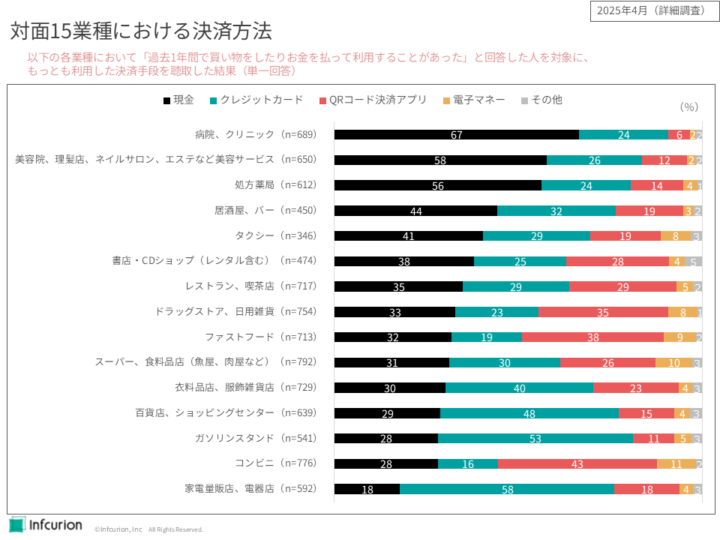
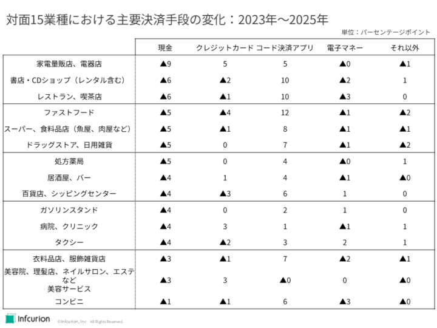

キャッシュレス決済の普及が加速する現代において、消費者の決済行動はどのように変化しているのでしょうか。スマートフォン決済やクレジットカードの利用が増える一方で、現金決済も場面によっては依然として根強い支持を得ています。
インフキュリオン独自の「決済動向2025年調査」に基づいて日本のキャッシュレス決済市場の現状を考察していくシリーズ第4回として、今回は対面15業種における決済方法の現状と、2023年から2025年にかけての変化を分析します。特に、現金決済の動向、コード決済アプリの台頭、そして業種ごとの特性に焦点を当てて解説し、日本のキャッシュレス市場の「今」と「これから」を深掘りしていきます。
「決済動向2025年調査」シリーズ記事
- 「コード決済アプリ利用率が過去最高を更新！非対面ではクレジットカードが群を抜く」、2025年6月27日
- 「対面決済ではPayPay首位、非対面では楽天カード」、2025年7月7日
- 「若年層のブランドデビット利用が急拡大、10代ではコード決済アプリが首位」、2025年7月9日
対面15業種における決済方法
まず、インフキュリオンが実施した調査「対面15業種における決済方法」のデータを見てみましょう。各業種において「過去1年間で買い物をしたりお金を払って利用したことがあった」と回答した方を対象に、もっとも利用した決済手段を単一回答で聴取した結果を示しています。15業種は、「現金」と回答した人の割合が大きい順に並べています。

対面１５業種における決済方法
「QRコード」は株式会社デンソーウェーブの登録商標です。
現金決済は医療と美容で多い
まず注目すべきは、医療分野と美容分野における現金決済の割合の高さです。 「病院、クリニック」では回答者の67%が最も利用する決済手段として「現金」を選択しており、圧倒的な割合を占めています。同様に、「美容院、理髪店、ネイルサロン、エステなどの美容サービス」でも、58%が現金をメインの決済手段としています。
医療は、これまでカード加盟が浸透していなかった領域です。保険診療は診療内容に応じて報酬金額が一律に定められています。カード決済端末導入コストや決済手数料を負担してまで顧客 （患者）への利便性で勝負する、という発想が生まれにくかったのではないかと考えられます。
しかし近年のキャッシュレス決済の広がりを受けて、医療分野においても、規模の大きい病院や処方薬局も営むドラッグストアチェーンなどではキャッシュレス決済が広まってきています。それに対し、開業医や小規模な処方薬局はいまだに現金のみであることも珍しくありません。とはいえ、過去の調査データと比較すると、医療分野においても「クレジットカード」や「QRコード決済アプリ」がメインの決済手段であると回答する人の割合は年々増えています。他業種との比較において現金利用が根強く残る医療業界ですが、キャッシュレス化はこのまま着実に進行していくと思われます。
美容も、地域に根差した小規模事業者で構成されているという点では医療と似ています。コストを負担してまで決済利便性を上げようという機運が生まれにくかったと考えられます。しかし消費者のキャッシュレス化が急速に進展した結果、美容分野にもキャッシュレス化の波が訪れています。特に、事前予約が前提であるような美容サービスでは、事前予約のサイトやアプリに非対面決済機能を搭載するのは自然です。決済端末についても、市販のタブレットやスマートフォンによるモバイル決済の普及が追い風になっていると考えられます。
QRコード決済は高単価業種へ進出
「メインの決済手段がQRコード決済アプリである」と回答した人の割合は、コンビニ（43%）、ファストフード（38%）、ドラッグストア・日用雑貨（35%）で高くなっており、それぞれの業種における首位となっています。
これらの業種は比較的低単価であることが特徴です。QRコード決済アプリが始まった当初、低単価・高頻度な業種から利用が広まっていったという経緯が反映されています。
しかし、QRコード決済アプリの使われ方にも大きな変化が起きています。百貨店・ショッピングセンター、スーパー・食料品店、レストラン・喫茶店、衣料品店・服飾雑貨店など、数千円以上の比較的高単価な業種においても、「QRコード決済アプリをもっとも利用する」という回答者が増えてきているのです。この点は後ほど、過去データと比較しながら詳しく述べます。
高単価に強いクレジットカード
「もっとも利用している決済手段はクレジットカード」という回答者の割合が多いのは、家電量販店・電器店（58%）、ガソリンスタンド（53%）、百貨店・ショッピングセンター（48%）などです。これらの業種の特徴としては比較的高単価であること、そしてポイント等のロイヤリティ施策が早くから発達していたこと、が挙げられます。
これまで長い間、主流のキャッシュレス決済手段としての位置を堅持してきたクレジットカードは、QRコード決済アプリが台頭した現在でも多くの業種でメインの決済手段として利用されています。しかし、いくつかの業種においては、既にQRコード決済アプリがクレジットカードを上回る割合でメイン決済手段として利用されています。
とはいえ、カード決済からも強力な対抗策が現れ、急速に普及しています。非接触IC決済、つまり「タッチ決済」です。日常生活におけるメインの決済手段の地位を巡るクレジットカードとQRコード決済アプリの競争は続きます。
タッチ決済とクレジットカードの利用動向については次回記事で詳しく取り上げる予定です。
主要決済手段の変化
次に、2023年から2025年にかけて、各業種で主要な決済手段がどのように変化するのかを表に示します。2023年調査と2025年調査の間の各決済手段のパーセンテージポイント（以下、ポイント）の増減を示しています（▲は減少、記号のないものは増加です）。現金の減少が大きい順に業種を並べています。

対面１５業種における主要決済手段の変化：2023年～2025年
まず気づくのは、全業種において、現金がメインというユーザーが減少していることです。家電量販店や電器店では9ポイント減、その他の業種でも軒並み現金利用者の割合が減少しており、日本のキャッシュレス化がさらに進展していることが明確に示されています。これは、消費者のキャッシュレス決済への抵抗感が薄れ、利便性の高さやポイント還元などのメリットが広く認識されてきたこと、そして同時にキャッシュレス決済が様々な業種に導入されていることを示しています。
また、QRコード決済アプリの目覚ましい躍進も見て取れます。14業種において、QRコード決済アプリをメインにするユーザーが増加しています（美容サービスでは▲0でわずかな減少となっています）。特に、ファストフードでは12ポイント増、レストラン・喫茶店、書店・CDショップ（レンタル含む）では共に10ポイント増と、大幅な伸びを見せています。まさに「どこに行ってもまずQRコード決済アプリ利用を考える」という行動が広まっていることを示唆します。
クレジットカードについては、業種によって増減が見られますが、そこには二つの大きな傾向が見られます。第一に、現金利用の減少分をクレジットカードとＱＲコード決済アプリで分け合って双方とも増大している業種があります。家電量販店・電器店、病院・クリニック、タクシーなどです。現金利用からキャッシュレスに転換した消費者の、転換先としてクレジットカードまたはQRコード決済が選ばれているといえます。
第二に、現金だけでなくクレジットカードも減少しており、QRコード決済アプリの伸びが目立っている業種があります。書店・CDショップやレストラン・喫茶店、ファストフード、それに百貨店・ショッピングセンターなどが該当します。もともとクレジットカードによるキャッシュレス化が進んでいた業種において、クレジットカードからQRコード決済アプリへと転換する消費者も一定数が存在していることを示唆しています。
展望
今回の調査データからは、日本のキャッシュレス決済市場は着実に浸透しており、特にQRコード決済アプリがその普及を強力に牽引していることが明らかになりました。多くの業種で現金離れが進み、消費者の決済行動は多様化の一途をたどっています。
一方で、病院や美容サービスといった一部の業種では、いまだに現金決済が根強く残っており、キャッシュレス化にはまだ乗り越えるべき課題があることを示唆しています。
今後も、技術の進化や消費者のライフスタイルの変化に伴い、決済手段の多様化はさらに進むと予想されます。インフキュリオンは、これからもキャッシュレス決済市場の動向を注視し、新たなデータ分析を通じて、皆様に有益な情報を提供してまいります。


{kind=link}
{kind=link}
{kind=link}